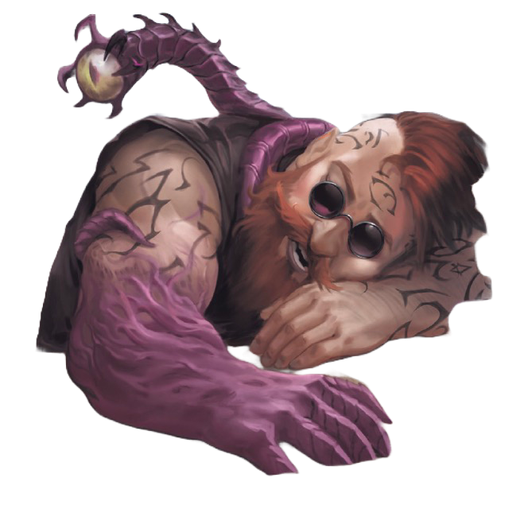

The features that most set Eberron apart are its tone and attitude. The setting combines traditional medieval fantasy with pulp action and dark adventure. Make no mistake—the world of Eberron proudly takes its place among the D&D worlds that have come before, with a cinematic flair and an eye toward the best action-adventure movies ever filmed. The campaign’s story elements were designed with this in mind.
The world of Eberron has a rich history built on heroic deeds, evolving magic, and the wounds of a long, devastating war. In the wake of this Last War, action, adventure, good, evil, and a thousand shades of gray paint the landscape in broad, powerful strokes, and ancient mysteries await discovery so that they too can influence the world and its people.
Magic is built into the very fabric of the setting. It pervades and influences everyday life. It provides certain comforts and conveniences unknown in either the modern world or any world of medieval fantasy. Great cities where castles scrape the sky can be found throughout the continent of Khorvaire, and a thriving aristocracy of merchant families controls much of the world’s economy thanks to the edge given them by the mysterious and rare dragonmarks.
Heroes come in all shapes and sizes, all classes and races. They travel the world, battling villains and recovering fabulous treasure, dealing with over-the-top action, harrowing challenges, cliffhanger situations, narrow escapes, and ominous mysteries that are as likely to shed light on centuries of secrets as they are to threaten the safety of the current day
Tout est en anglais, non pas parce que j'aime pas dire dracogramme, dracolithe ou forgelier (en fait je préfère de loin), mais c'est pour éviter trop de traduction libre en ce qui touche les mécaniques de pathfinder. Faque même si on est au kébekicitte, only english messages will follow...
Ho pis rien de ce qui suit est parole d'évangile, hein! J'm'amuse à faire des conversions en utilisant les PF Tools avec tout ce qui me fais tripper sur Eberron en tête, mais jamais je bouderai parce que vous utilisez pas c'que j'ai fais, en fais j'espère que dans notre One note, vous metterez vos concoctions, question que je vous plagie.
Despite being sealed away under the earth, a daelkyr can reproduce, after a fashion. A daelkyr's corporeal incarceration constantly leaks the virulence of its corrupting spirit. The unborn are especially vulnerable to this influence, and those innocents growing in the wombs of their mothers within the sphere of this beastly influence are born as daelkyr half-bloods.
Daelkyr half-bloods are born of pregnant mothers who were either influenced by close proximity to a daelkyr confinement cylinder or infected by a breed leech. Transformed in the womb from the natural creature they might have otherwise become, half-bloods are instead born as aberrations, the knowledge of which each new daelkyr half-blood can embrace or reject as its own true nature becomes clear. Daelkyr half-blood typically goes on to serve daelkyr goals. And still, there are some who resist—fragile minds waging a quiet inner war against the ancient dread whispering that their purpose lies in serving the Xoriat's overlord. However, the birth of a daelkyr half-blood is always accompanied by the afterbirth of a symbiont, twin to the daelkyr half-blood, if different in form and ability. Child and symbiont share an unnatural attraction, despite the horror of parents who might be tempted to cast out both. Such hard-luck half-bloods, shunned by their parents, might be more drawn to daelkyr ideals than those of their biological forebears.
Half-bloods often give themselves to melancholy, anguish, and fits of extreme anger. More than most creatures, half-bloods can be of two minds on a particular subject, almost as if they indeed possessed two physical minds, and not just one like most creatures. Half-bloods tend to avoid the spotlight, especially in urban environments where their true nature might be revealed through too much exposure to common folk. As such, they prefer dark corners, night, and sidestreets.
Anguish burns in the eyes of daelkyr half-bloods, because their spirits are always in conflict. The most obvious outward sign that a creature has been "womb-warped" is the natural symbiont that is first birthed with a daelkyr half-blood (the symbiont is sometimes mistaken for a disfigured twin or gruesome afterbirth), then later befriended, worn, and utilized by the adult half-blood.
Your mother's womb was warped by the daelkyr influence. Your symbiot twin is the most obvious signifier of this parentage, but you likely also have voidlike eyes, hairless skin or any unusual feature for a members of your other parent’s ancestry. You start with a level 1 uncommon symbiot and you gain the aberration trait. Your unique metabolism effectively fights off diseases, You gain a +1 circumstance bonus to saving throws against diseases. You also gain darkvision. You can select from half-blood feats and feats from your other parent’s ancestry whenever you gain an ancestry feat.
The following feats are available to daelkyr half-blood characters.